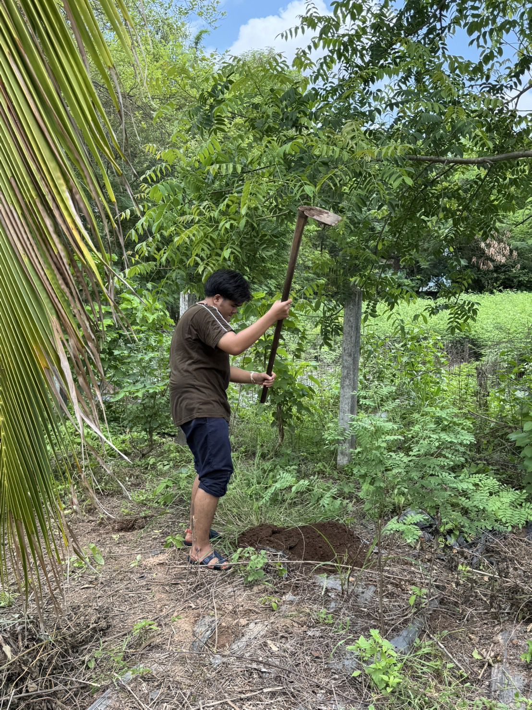

ผมชื่อทีม อายุ 21 ปี ปัจจุบันกำลังศึกษาอยู่ที่ มจพ. ปราจีนบุรี กิจกรรมยามว่างคือเล่นเกมและดูฟุตบอล เป็นคนสนุก ร่าเริง
ชอบอยู่แบบธรรมชาติ ปลูกต้นไม้ อากาศจะได้ปลอดโปร่ง ต้นไม้ที่โตเร็วที่สุดคือ.. ต้นที่ปลูกวันนี้

ผมเรียนจบ ปวส. ที่วิทยาลัยอีเทค จังหวัดชลบุรี สาขาเทคโนโลยีสารสนเทศ เขียนโค้ดเป็นนิดหน่อย ชอบเขียนแนวเว็บไซต์ และแอปพลิเคชั่น
ตอนสอบติดที่มหาวิทยาลัยเทคโนโลยีพระจอมเกล้าพระนครเหนือ วิทยาเขตปราจีนบุรี คณะเทคโนโลยีและการจัดการอุตสาหกรรม สาขาเทคโนโลยีสารสนเทศ